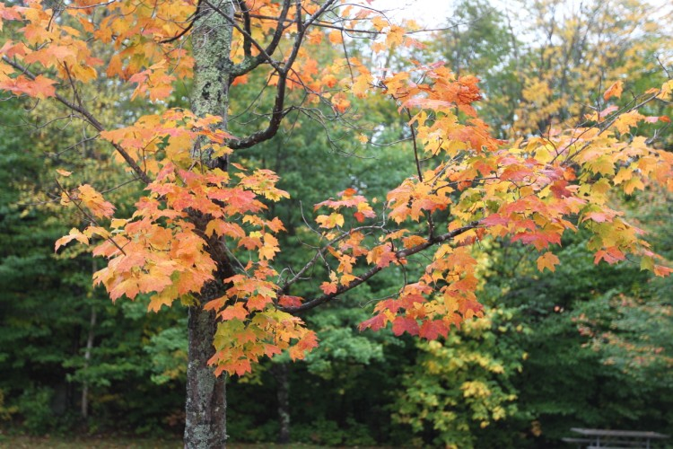
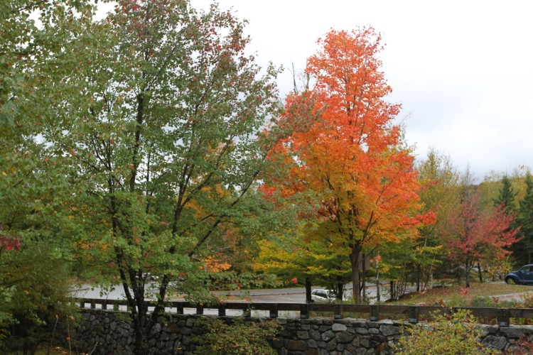
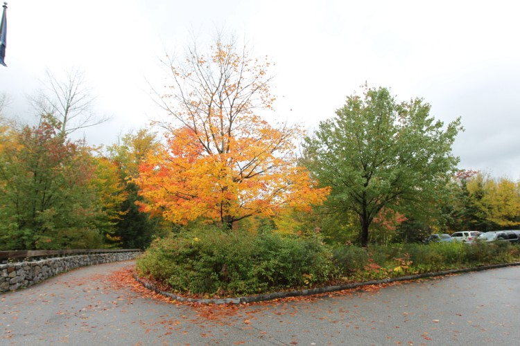
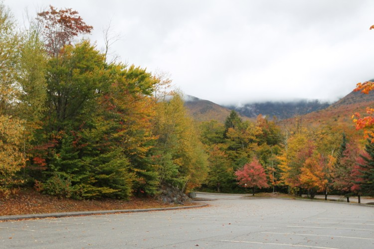
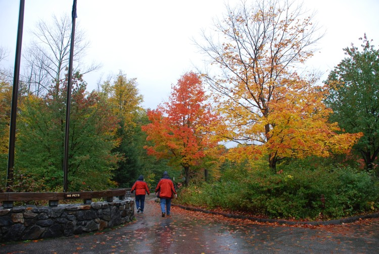
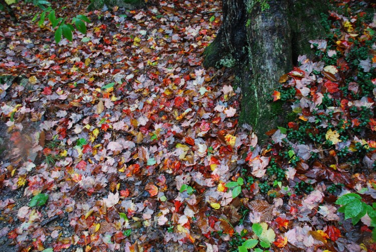
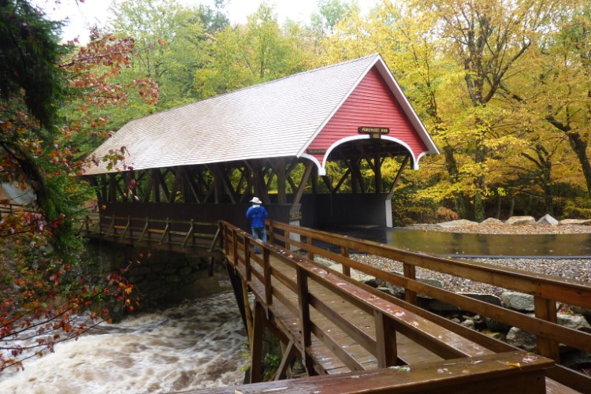
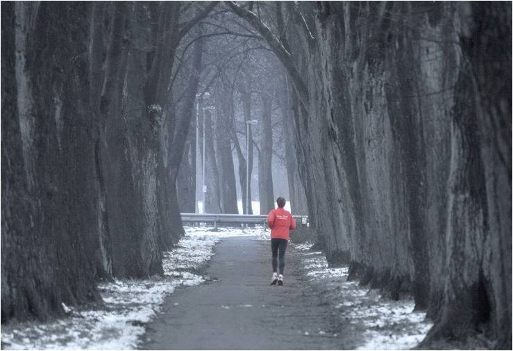
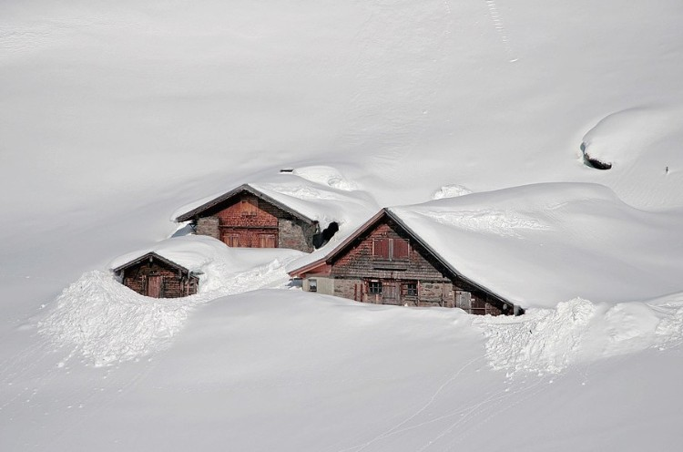
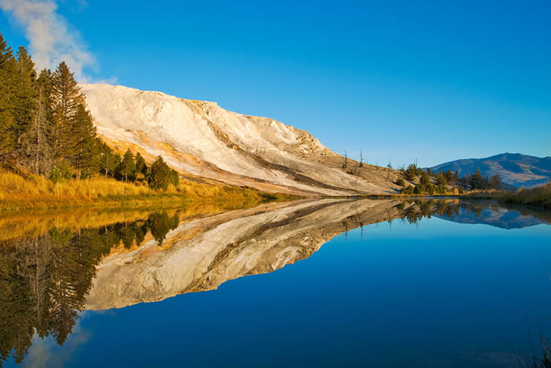

安纳波利斯是那种第一眼就会爱上的小城，它静谧安然的气息，就如同这首AnneMurray的歌声
1
/
23
活动介绍
安纳波利斯是那种第一眼就会爱上的小城，它静谧安然的气息，就如同这首AnneMurray的歌声，会让你的眼前浮现出N多美国电影，那种节奏舒缓的，安安静静讲述一个故事的那种电影，似乎就发生在这样的地方。安纳波利斯(Annapolis)是美国马里兰州首府,1783年11月到1784年6月的美国临时首都，承认美国独立的《1783年巴黎条约》就是在这里签署的。









